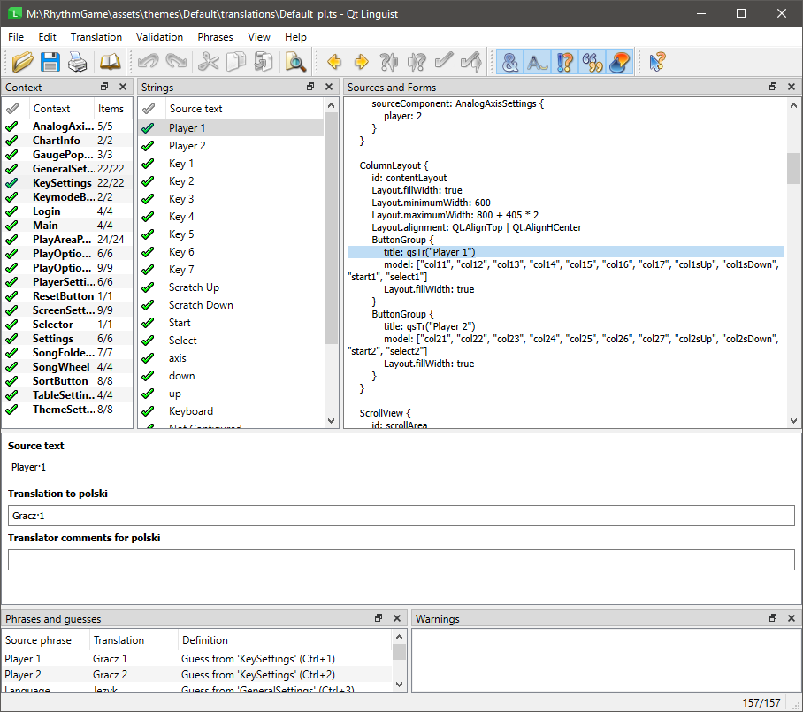

- Generated by
 1.15.0
1.15.0
|
RhythmGame 1.4.1
|
Each theme declares its available languages and translation files in theme.json. Settings labels are translated in JSON; QML text uses Qt translation catalogs.
Default's catalog also contains shared text from Arena, RhythmGameQml/StandardSelectOptions.qml, and C++ sources such as the Backbeat integration. Those translations are available to all themes. Themes can use the shared sorting and replay labels or supply their own text in their own catalogs.
The translation lesson includes an installable example and commands for building its catalog.
Settings files store translations directly in each setting's name and description objects. Choice labels and group labels use the same format. Add a language key beside the existing ones. See Default's k7 settings for a complete file.
Locale identifiers use a supported subset of BCP 47: an ISO 639 language code, an optional ISO 15924 script code, and an optional ISO 3166-1 territory code. For example, fr-CA is Canadian French, zh-Hans is Simplified Chinese, zh-Hant-TW is Traditional Chinese for Taiwan, and zh-Hant-HK is Traditional Chinese for Hong Kong. Hyphens are preferred. Existing identifiers with underscores, such as fr_CA, also work. Manifest keys are normalized at load time.
Script subtags matter when a language uses more than one writing system. The game first looks for an exact match, then the closest available entry in the same language, preferring a matching script and territory. It avoids entries for an incompatible script. If there is no match, it tries the system language and then English. Settings labels use the first available entry as a final fallback.
For example, here is a property with an added Canadian French translation:
Declare each supported language in the translations object in theme.json. These keys make the language selectable in the game. Paths are relative to the theme folder. For example:
A .qm file is a compiled Qt translation catalog. Use an empty path when that language should display the original QML text. In the example, English uses the source text and Canadian French translates only the settings labels. An empty path does not try to load a catalog and is not an error.
If you supply a path, include that .qm file with the theme. A missing file is logged and that language entry is skipped. Restart after changing the manifest or replacing translation files. Once the files are loaded, changing the profile's language updates the QML text and settings labels without restarting.
Each theme chooses its catalog using the language matching described above. If there is no matching catalog or a string has no translation, Qt displays the source text.
To mark a string in a QML file as translatable, you need to wrap it in the qsTr() function. An in-depth explanation of how to use it can be found in the Qt documentation.
For translating strings in QML files, you will need to use the Qt Linguist toolchain. There are three essential tools:
Edit the .ts file in Qt Linguist, then compile it with lrelease. Keep the source .ts file for future edits and ship the compiled .qm file with the theme. Preserve placeholders such as %1 and %2 in translated text.
You can work on these files without building the game. Install the tools with Qt, then follow the commands in the translation lesson.
Here is what it should look like inside Qt Linguist:

Default's .ts and .qm files live in share/RhythmGame/themes/Default/translations/. With a configured developer build, use these targets:
Use your own build directory if it has a different name. update_translations runs lupdate on the QML and C++ sources selected by the build. It updates the catalog's source strings; translate those entries in Qt Linguist before running release_translations. The latter compiles the catalogs and also runs during normal game builds.
To add a language to Default, add its Qt locale code to I18N_TRANSLATED_LANGUAGES in CMakeLists.txt, reconfigure, and run update_translations. After translating and compiling the new catalog, add its language and .qm path to Default's manifest.